Fasting Insulin Cutoff = 6
+ (>=5 mg/dL) - (<5 mg/dL) Sum
Ins<=6 329 73 402
Ins>6 428 276 704
Sum 757 349 1106
[Chi-square]
X-squared = 51.504
p-value = 7.14e-13
Cramer's V = 0.218
(0 None 0.1 Low 0.3 Medium 0.5 Strong)
col_predict = 4.744%
row_predict = 4.744%
- (<5 mg/dL) + (>=5 mg/dL) Sum
Ins<=6 139 86 225
Ins>6 723 165 888
Sum 862 251 1113
[Chi-square]
X-squared = 38.533
p-value = 5.38e-10
Cramer's V = 0.189
(0 None 0.1 Low 0.3 Medium 0.5 Strong)
col_predict = 3.562%
row_predict = 3.562%
- (<5 mg/dL) + (>=5 mg/dL) Sum
Ins<=6 212 415 627
Ins>6 999 593 1592
Sum 1211 1008 2219
[Chi-square]
X-squared = 150.8
p-value = 1.16e-34
Cramer's V = 0.262
(0 None 0.1 Low 0.3 Medium 0.5 Strong)
col_predict = 6.848%
row_predict = 6.848%Fasting Insulin(Cutoff = 6)預測尿酮體反應(+)的Sensitivity= 0.42, Specificity= 0.81。
Fasting Insulin(Cutoff = 6)預測尿酮體反應(+)的Sensitivity= 0.32, Specificity= 0.85。
Fasting Insulin(Cutoff = 6)預測尿酮體反應(+)的Sensitivity= 0.40, Specificity= 0.84。
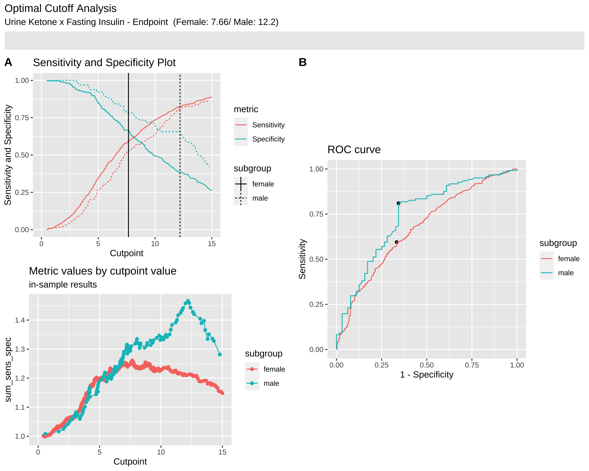
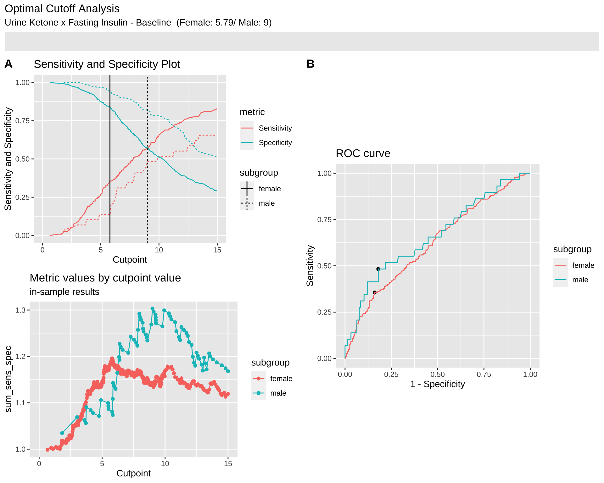
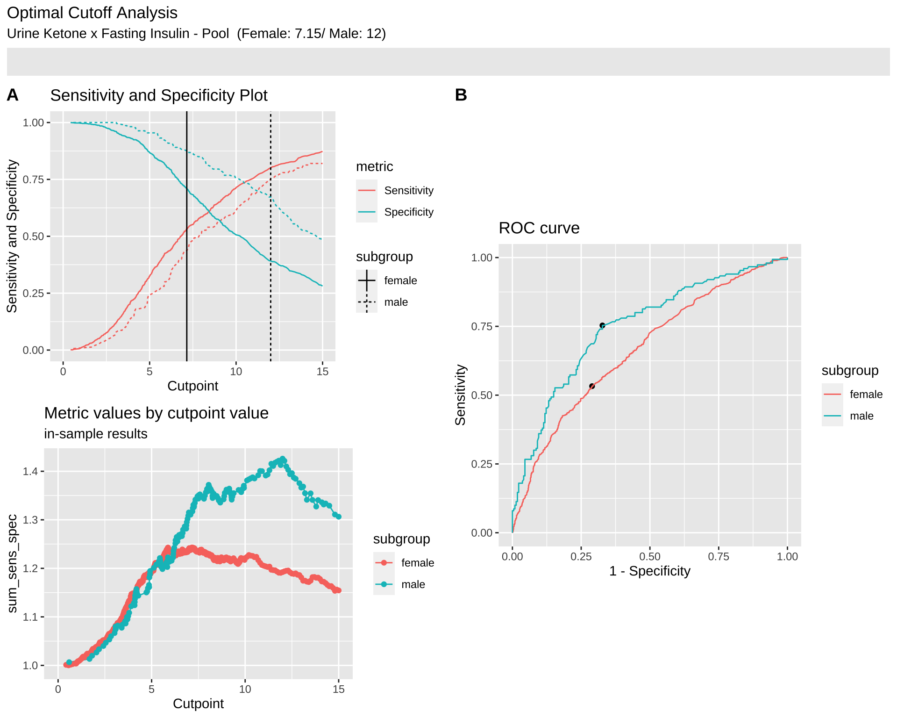
| Neg.>Neg. | Neg.>Pos. | Pos.>Neg. | Pos.>Pos. | Sum | |
|---|---|---|---|---|---|
| female | 236 | 457 | 47 | 172 | 912 |
| male | 52 | 104 | 11 | 18 | 185 |
| Sum | 288 | 561 | 58 | 190 | 1097 |
| Note: |
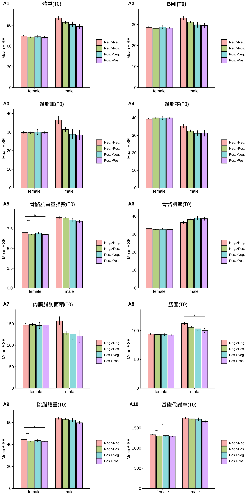
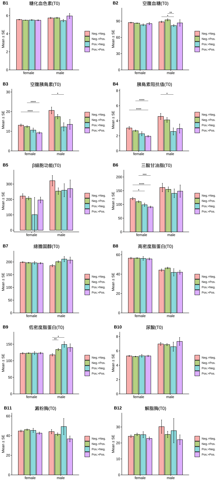
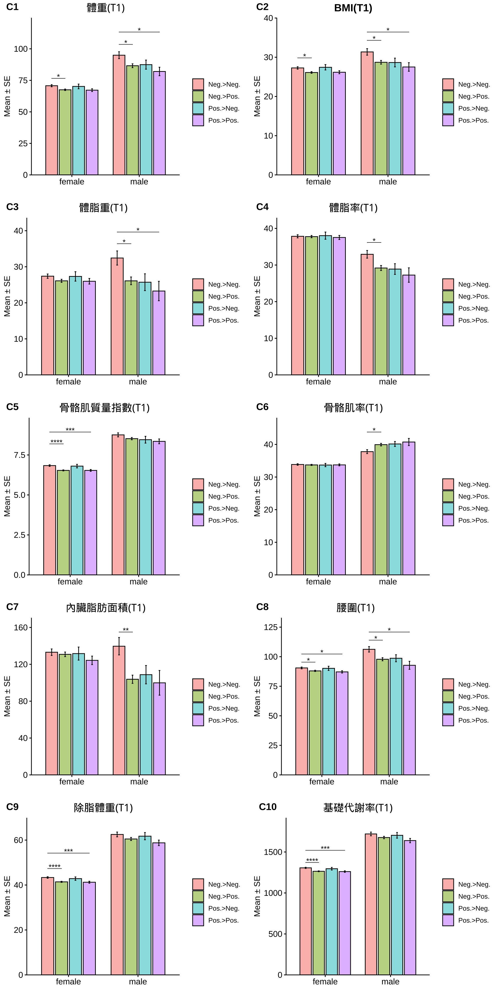
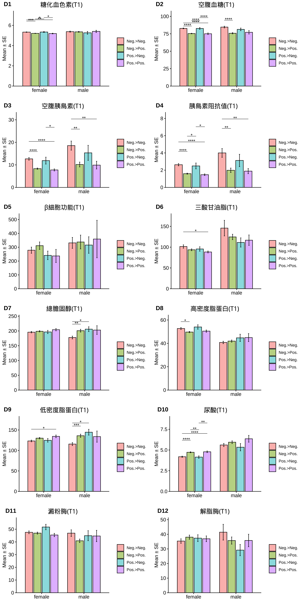
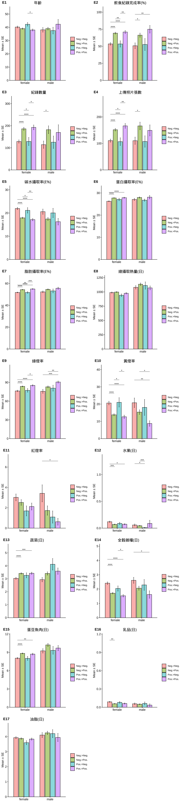
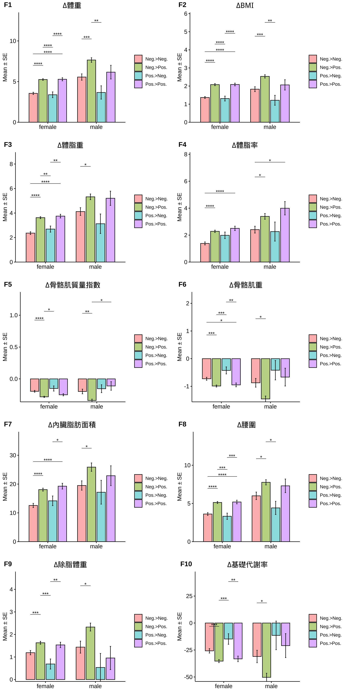
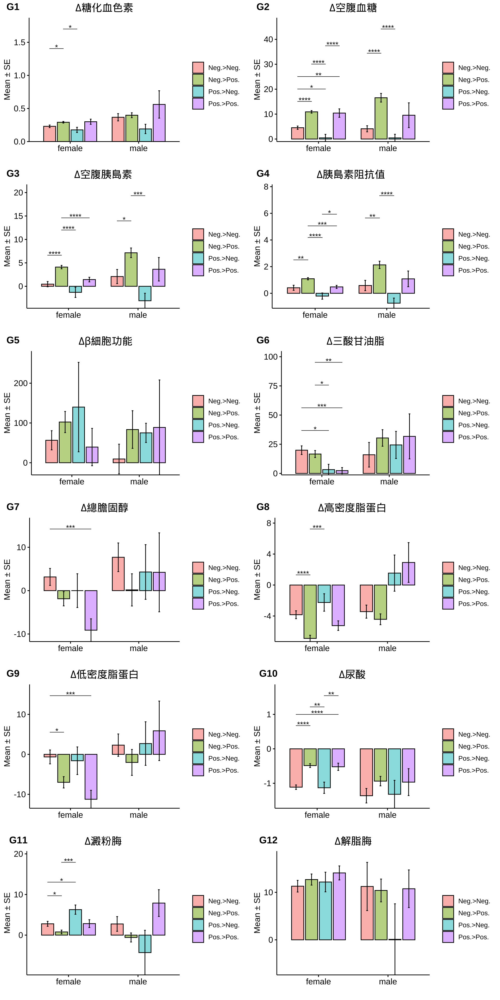
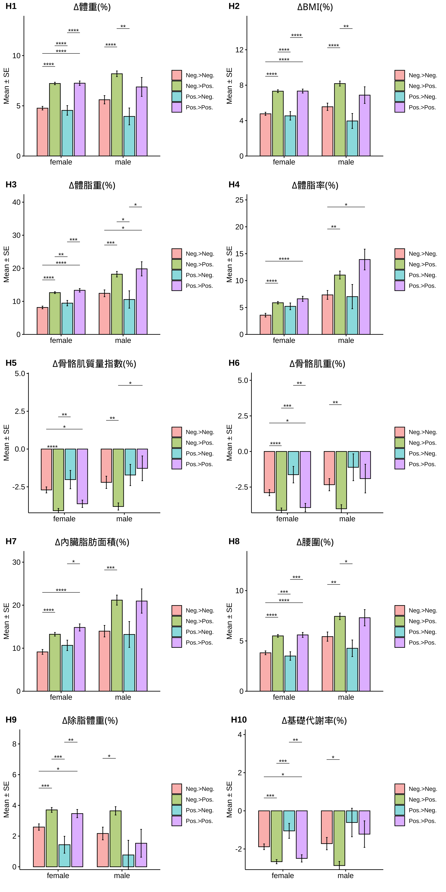
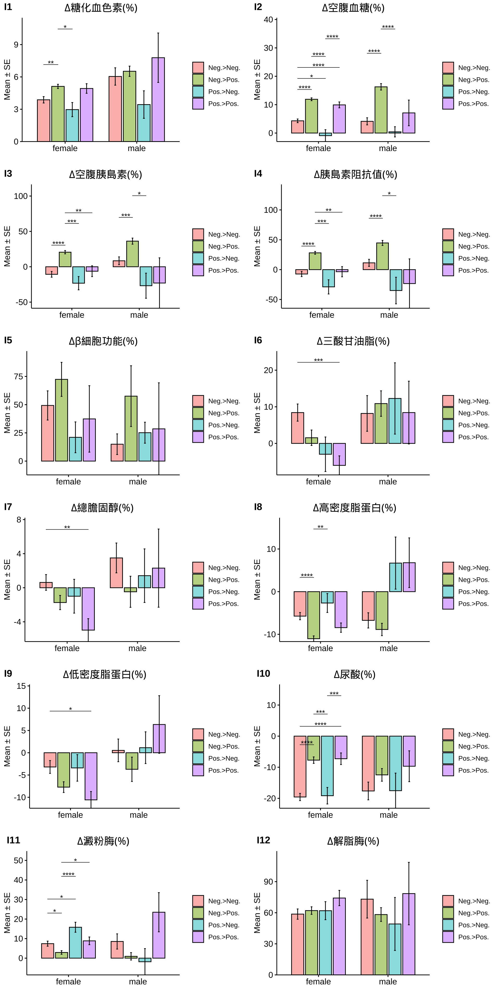
| Neg.>Neg. | Neg.>Pos. | Pos.>Neg. | Pos.>Pos. | Neg.>Neg. | Neg.>Pos. | Pos.>Neg. | Pos.>Pos. | |
|---|---|---|---|---|---|---|---|---|
| 體重(T0) | 74.3 ± 0.87 | 72.77 ± 0.62 | 73.56 ± 1.94 | 72.51 ± 1.18 | 100.5 ± 2.8 | 94.24 ± 1.59 | 91.13 ± 3.87 | 88.21 ± 3.55 |
| BMI(T0) | 28.64 ± 0.32 | 28.19 ± 0.22 | 28.75 ± 0.7 | 28.26 ± 0.41 | 33.19 ± 0.85 | 31.25 ± 0.48 | 29.87 ± 1.23 | 29.58 ± 1.15 |
| 體脂重(T0) | 29.76 ± 0.62 | 29.73 ± 0.45 | 30.02 ± 1.33 | 29.73 ± 0.82 | 36.55 ± 1.99 | 31.42 ± 1.09 | 28.85 ± 2.57 | 28.48 ± 2.71 |
| 體脂率(T0) | 39.23 ± 0.42 | 40.04 ± 0.29 | 40.01 ± 0.91 | 40.03 ± 0.49 | 35.34 ± 0.95 | 32.58 ± 0.61 | 31.16 ± 1.53 | 31.26 ± 1.76 |
| 骨骼肌質量指數(T0) | 7.03 ± 0.05 | 6.82 ± 0.03 | 6.95 ± 0.12 | 6.78 ± 0.06 | 8.95 ± 0.12 | 8.86 ± 0.07 | 8.61 ± 0.23 | 8.46 ± 0.15 |
| 骨骼肌率(T0) | 33.2 ± 0.23 | 32.63 ± 0.16 | 32.67 ± 0.46 | 32.54 ± 0.26 | 36.49 ± 0.55 | 38.18 ± 0.35 | 39.01 ± 0.82 | 38.63 ± 0.95 |
| 內臟脂肪面積(T0) | 146.64 ± 3.07 | 148.44 ± 2.15 | 145.97 ± 6.45 | 146.93 ± 4.01 | 156.92 ± 8.11 | 128.42 ± 4.06 | 125.91 ± 11.65 | 121.15 ± 13.02 |
| 腰圍(T0) | 94.11 ± 0.77 | 93.12 ± 0.54 | 93.47 ± 1.85 | 92.33 ± 1.01 | 112.24 ± 2.29 | 105.6 ± 1.28 | 103.09 ± 3.04 | 100.02 ± 3.49 |
| 除脂體重(T0) | 44.54 ± 0.36 | 43.05 ± 0.25 | 43.54 ± 0.81 | 42.78 ± 0.47 | 63.95 ± 1.11 | 62.82 ± 0.72 | 62.28 ± 1.73 | 59.73 ± 1.23 |
| 基礎代謝率(T0) | 1332.12 ± 7.75 | 1299.89 ± 5.36 | 1310.68 ± 17.45 | 1294.15 ± 10.07 | 1751.35 ± 23.96 | 1726.93 ± 15.62 | 1714.91 ± 37.26 | 1660.33 ± 26.65 |
| 糖化血色素(T0) | 5.56 ± 0.04 | 5.5 ± 0.02 | 5.52 ± 0.07 | 5.49 ± 0.06 | 5.75 ± 0.08 | 5.76 ± 0.06 | 5.45 ± 0.14 | 5.97 ± 0.27 |
| 空腹血糖(T0) | 87.31 ± 0.84 | 86.3 ± 0.53 | 83.15 ± 1.81 | 85.48 ± 2.1 | 88.77 ± 1.39 | 92.36 ± 1.95 | 81.82 ± 1.82 | 86.72 ± 5.99 |
| 空腹胰島素(T0) | 13.11 ± 0.59 | 12.41 ± 0.45 | 10.6 ± 1.05 | 9.22 ± 0.48 | 20.63 ± 1.71 | 17.46 ± 1.11 | 12.25 ± 2.09 | 13.53 ± 2.5 |
| 胰島素阻抗值(T0) | 3.05 ± 0.2 | 2.68 ± 0.1 | 2.28 ± 0.27 | 1.95 ± 0.11 | 4.58 ± 0.4 | 4.12 ± 0.31 | 2.59 ± 0.45 | 2.97 ± 0.6 |
| β細胞功能(T0) | 222.01 ± 15.3 | 208.27 ± 10.81 | 101.2 ± 112.15 | 196.54 ± 18.82 | 321.87 ± 33.89 | 254.3 ± 20.99 | 259.96 ± 40.31 | 270.31 ± 56.49 |
| 三酸甘油脂(T0) | 121.45 ± 4.55 | 110.31 ± 3.35 | 98.89 ± 6.13 | 90.8 ± 3.28 | 161.81 ± 15.31 | 154.98 ± 8.92 | 140.7 ± 15.07 | 148.5 ± 22.38 |
| 總膽固醇(T0) | 199.03 ± 2.51 | 196.99 ± 1.73 | 196.62 ± 5.67 | 195.15 ± 2.91 | 185.52 ± 4.63 | 201.09 ± 3.6 | 211.2 ± 9.75 | 207.22 ± 11.96 |
| 高密度脂蛋白(T0) | 56.54 ± 0.92 | 56.57 ± 0.61 | 56.27 ± 1.96 | 55.73 ± 1.01 | 44.22 ± 1.2 | 46.37 ± 0.86 | 41.87 ± 3.61 | 42.04 ± 2.07 |
| 低密度脂蛋白(T0) | 122.56 ± 2.25 | 123.06 ± 1.48 | 123.15 ± 4.74 | 123.17 ± 2.58 | 117.94 ± 3.61 | 133.95 ± 3.15 | 149.2 ± 7.96 | 139.72 ± 11.39 |
| 尿酸(T0) | 5.3 ± 0.08 | 5.21 ± 0.05 | 5.31 ± 0.2 | 5.3 ± 0.1 | 6.97 ± 0.21 | 6.88 ± 0.15 | 6.59 ± 0.61 | 7.32 ± 0.55 |
| 澱粉脢(T0) | 44.78 ± 0.95 | 46.16 ± 0.73 | 45.45 ± 2.1 | 42.61 ± 1.12 | 44.15 ± 2.17 | 41.47 ± 1.46 | 49.3 ± 7.85 | 36.78 ± 2.93 |
| 解脂脢(T0) | 24.21 ± 0.81 | 25.36 ± 0.8 | 25.19 ± 1.88 | 22.84 ± 0.94 | 30.21 ± 4.19 | 25.33 ± 1.98 | 27.7 ± 7.26 | 22.06 ± 2.94 |
| 體重(T1) | 70.74 ± 0.84 | 67.52 ± 0.59 | 70.18 ± 1.86 | 67.23 ± 1.1 | 94.94 ± 2.74 | 86.59 ± 1.53 | 87.46 ± 3.61 | 82.04 ± 3.38 |
| BMI(T1) | 27.27 ± 0.31 | 26.11 ± 0.21 | 27.44 ± 0.69 | 26.18 ± 0.38 | 31.36 ± 0.83 | 28.72 ± 0.47 | 28.66 ± 1.12 | 27.52 ± 1.1 |
| 體脂重(T1) | 27.39 ± 0.6 | 26.1 ± 0.43 | 27.33 ± 1.31 | 25.98 ± 0.78 | 32.43 ± 1.96 | 26.1 ± 1.07 | 25.72 ± 2.34 | 23.27 ± 2.7 |
| 體脂率(T1) | 37.85 ± 0.43 | 37.76 ± 0.31 | 38.03 ± 0.98 | 37.53 ± 0.55 | 32.93 ± 1.05 | 29.19 ± 0.69 | 28.9 ± 1.46 | 27.26 ± 1.97 |
| 骨骼肌質量指數(T1) | 6.84 ± 0.05 | 6.54 ± 0.03 | 6.8 ± 0.11 | 6.53 ± 0.06 | 8.76 ± 0.13 | 8.52 ± 0.07 | 8.45 ± 0.21 | 8.35 ± 0.15 |
| 骨骼肌率(T1) | 33.85 ± 0.23 | 33.72 ± 0.16 | 33.68 ± 0.5 | 33.72 ± 0.29 | 37.79 ± 0.6 | 39.93 ± 0.39 | 40.14 ± 0.76 | 40.74 ± 1.1 |
| 內臟脂肪面積(T1) | 133.13 ± 2.99 | 130.82 ± 2.15 | 131.64 ± 6.53 | 124.3 ± 4 | 139.66 ± 8.18 | 103.8 ± 3.93 | 108.76 ± 9.98 | 99.91 ± 12.62 |
| 腰圍(T1) | 90.49 ± 0.76 | 87.99 ± 0.52 | 90.15 ± 1.78 | 87.14 ± 0.97 | 106.24 ± 2.32 | 97.84 ± 1.31 | 98.67 ± 2.98 | 92.72 ± 3.41 |
| 除脂體重(T1) | 43.35 ± 0.34 | 41.42 ± 0.23 | 42.86 ± 0.76 | 41.25 ± 0.43 | 62.51 ± 1.07 | 60.49 ± 0.69 | 61.75 ± 1.61 | 58.77 ± 1.23 |
| 基礎代謝率(T1) | 1306.34 ± 7.35 | 1264.6 ± 5.07 | 1295.87 ± 16.32 | 1260.92 ± 9.33 | 1720.35 ± 23.03 | 1676.61 ± 14.81 | 1703.45 ± 34.81 | 1639.39 ± 26.5 |
| 糖化血色素(T1) | 5.33 ± 0.03 | 5.21 ± 0.02 | 5.34 ± 0.05 | 5.19 ± 0.03 | 5.38 ± 0.05 | 5.36 ± 0.04 | 5.26 ± 0.14 | 5.41 ± 0.11 |
| 空腹血糖(T1) | 82.76 ± 0.55 | 75.4 ± 0.41 | 82.68 ± 1.24 | 75.06 ± 1.12 | 84.65 ± 1.24 | 75.79 ± 0.86 | 81.36 ± 1.9 | 77.17 ± 2.47 |
| 空腹胰島素(T1) | 12.67 ± 0.59 | 8.32 ± 0.28 | 11.89 ± 1.53 | 7.75 ± 0.45 | 18.55 ± 2.01 | 10.17 ± 1.06 | 15.34 ± 3.33 | 9.89 ± 1.71 |
| 胰島素阻抗值(T1) | 2.63 ± 0.13 | 1.59 ± 0.06 | 2.49 ± 0.34 | 1.47 ± 0.09 | 4 ± 0.51 | 1.99 ± 0.26 | 3.13 ± 0.71 | 1.89 ± 0.3 |
| β細胞功能(T1) | 278.48 ± 22.26 | 311.24 ± 26.72 | 241.14 ± 30.89 | 236.93 ± 46.98 | 331.32 ± 39.39 | 337.77 ± 49.86 | 315.76 ± 59.68 | 359.07 ± 135.35 |
| 三酸甘油脂(T1) | 101.56 ± 4.05 | 93.7 ± 2.18 | 95.64 ± 5.31 | 88.42 ± 2.25 | 145.83 ± 18.74 | 124.61 ± 6.46 | 111.27 ± 11.07 | 116.78 ± 12.55 |
| 總膽固醇(T1) | 195.87 ± 2.45 | 198.86 ± 2.07 | 196.62 ± 5.43 | 204.27 ± 3.89 | 177.83 ± 4.74 | 200.91 ± 4.69 | 206.09 ± 8.08 | 203 ± 14.76 |
| 高密度脂蛋白(T1) | 52.7 ± 0.82 | 49.68 ± 0.53 | 54.02 ± 1.88 | 50.48 ± 0.94 | 40.78 ± 1.04 | 41.94 ± 0.91 | 44.72 ± 3.09 | 44.95 ± 3.4 |
| 低密度脂蛋白(T1) | 123.2 ± 2.06 | 130.05 ± 1.74 | 124.74 ± 4.44 | 134.4 ± 3.28 | 115.63 ± 3.58 | 135.97 ± 3.84 | 144.55 ± 7.11 | 133.83 ± 13.68 |
| 尿酸(T1) | 4.19 ± 0.07 | 4.72 ± 0.06 | 4.15 ± 0.14 | 4.78 ± 0.1 | 5.61 ± 0.19 | 5.94 ± 0.16 | 5.34 ± 0.44 | 6.36 ± 0.41 |
| 澱粉脢(T1) | 47.56 ± 1.09 | 46.94 ± 0.77 | 51.72 ± 2.14 | 45.44 ± 1.29 | 46.9 ± 2.61 | 40.89 ± 1.36 | 44.91 ± 3.93 | 44.67 ± 4.45 |
| 解脂脢(T1) | 35.37 ± 1.53 | 38.05 ± 1.41 | 37.36 ± 2.32 | 36.92 ± 1.95 | 41.44 ± 5.39 | 35.72 ± 2.44 | 29.18 ± 3.84 | 35.76 ± 4.16 |
| 年齡 | 40.22 ± 0.72 | 39.04 ± 0.48 | 42.28 ± 1.34 | 37.99 ± 0.75 | 38.12 ± 1.72 | 39.02 ± 0.99 | 37.55 ± 2.5 | 42.33 ± 3.57 |
| 飲食紀錄完成率(%) | 53.48 ± 1.83 | 69.25 ± 1.33 | 53.44 ± 4.56 | 70.93 ± 2.15 | 50.77 ± 4.21 | 66.32 ± 2.98 | 52.63 ± 8.72 | 74.96 ± 5.55 |
| 紀錄數量 | 128.78 ± 7.24 | 186.07 ± 6.7 | 128.89 ± 18.08 | 192.78 ± 10.7 | 114.44 ± 16.54 | 182.12 ± 17.46 | 125.55 ± 28.03 | 169.56 ± 34.9 |
| 上傳照片張數 | 110.64 ± 5.82 | 151.63 ± 4.68 | 106.79 ± 14.41 | 166.24 ± 8.94 | 110.29 ± 13.6 | 166.12 ± 14.25 | 107.27 ± 21.35 | 149.22 ± 20.67 |
| 碳水攝取率(E%) | 21.94 ± 0.45 | 17.93 ± 0.29 | 21.15 ± 1.16 | 17.16 ± 0.47 | 20.59 ± 1.12 | 17.45 ± 0.65 | 20.04 ± 1.97 | 16.26 ± 1.41 |
| 蛋白攝取率(E%) | 26.26 ± 0.19 | 27.75 ± 0.12 | 27.09 ± 0.54 | 27.87 ± 0.23 | 27.07 ± 0.46 | 27.96 ± 0.27 | 26.76 ± 0.48 | 28.11 ± 0.76 |
| 脂肪攝取率(E%) | 51.8 ± 0.33 | 54.32 ± 0.23 | 51.76 ± 0.74 | 54.97 ± 0.33 | 52.34 ± 0.82 | 54.59 ± 0.47 | 53.2 ± 1.78 | 55.63 ± 0.96 |
| 總攝取熱量(日) | 989.21 ± 10.17 | 998.14 ± 7.24 | 942.3 ± 23.12 | 976.44 ± 12.58 | 1080.75 ± 29.5 | 1135.05 ± 21.81 | 1112.37 ± 63.27 | 1070.76 ± 34.31 |
| 綠燈率 | 76.35 ± 1.17 | 83.67 ± 0.65 | 77.29 ± 2.87 | 85.23 ± 1.09 | 75.8 ± 3.11 | 82.91 ± 1.46 | 80.84 ± 4.69 | 90.62 ± 1.62 |
| 黃燈率 | 20.62 ± 1.05 | 13.81 ± 0.58 | 21.02 ± 2.69 | 12.65 ± 0.94 | 20.78 ± 2.75 | 15.36 ± 1.33 | 18.07 ± 4.58 | 8.75 ± 1.58 |
| 紅燈率 | 3.02 ± 0.33 | 2.52 ± 0.27 | 1.69 ± 0.49 | 2.12 ± 0.34 | 3.42 ± 0.83 | 1.73 ± 0.45 | 1.09 ± 0.6 | 0.63 ± 0.33 |
| 水果(日) | 0.12 ± 0.01 | 0.07 ± 0.01 | 0.09 ± 0.02 | 0.07 ± 0.01 | 0.06 ± 0.02 | 0.05 ± 0.01 | 0.01 ± 0 | 0.09 ± 0.06 |
| 蔬菜(日) | 3.03 ± 0.07 | 3.42 ± 0.05 | 3.27 ± 0.19 | 3.43 ± 0.08 | 2.94 ± 0.16 | 3.41 ± 0.12 | 4.12 ± 0.44 | 3.59 ± 0.24 |
| 全穀雜糧(日) | 2.41 ± 0.09 | 1.71 ± 0.05 | 2.04 ± 0.18 | 1.53 ± 0.08 | 2.61 ± 0.21 | 2.06 ± 0.14 | 2.29 ± 0.37 | 1.62 ± 0.26 |
| 蛋豆魚肉(日) | 8.05 ± 0.12 | 8.83 ± 0.08 | 8.02 ± 0.32 | 8.72 ± 0.14 | 9.25 ± 0.35 | 10.22 ± 0.25 | 9.34 ± 0.63 | 9.7 ± 0.42 |
| 乳品(日) | 0.09 ± 0.01 | 0.06 ± 0 | 0.08 ± 0.01 | 0.06 ± 0.01 | 0.06 ± 0.01 | 0.05 ± 0.01 | 0.06 ± 0.02 | 0.04 ± 0.02 |
| 油脂(日) | 3.93 ± 0.06 | 3.88 ± 0.05 | 3.6 ± 0.13 | 3.84 ± 0.07 | 4.1 ± 0.16 | 4.25 ± 0.11 | 4.2 ± 0.26 | 3.95 ± 0.27 |
| ∆體重 | 3.55 ± 0.14 | 5.25 ± 0.1 | 3.38 ± 0.36 | 5.28 ± 0.19 | 5.56 ± 0.39 | 7.65 ± 0.28 | 3.66 ± 0.82 | 6.16 ± 0.84 |
| ∆BMI | 1.37 ± 0.05 | 2.08 ± 0.06 | 1.31 ± 0.13 | 2.09 ± 0.08 | 1.83 ± 0.13 | 2.53 ± 0.09 | 1.21 ± 0.27 | 2.06 ± 0.29 |
| ∆體脂重 | 2.36 ± 0.11 | 3.62 ± 0.08 | 2.69 ± 0.25 | 3.75 ± 0.15 | 4.12 ± 0.31 | 5.32 ± 0.23 | 3.13 ± 0.8 | 5.21 ± 0.58 |
| ∆體脂率 | 1.38 ± 0.11 | 2.28 ± 0.09 | 1.99 ± 0.24 | 2.5 ± 0.16 | 2.41 ± 0.25 | 3.39 ± 0.21 | 2.26 ± 0.71 | 3.99 ± 0.5 |
| ∆骨骼肌質量指數 | -0.2 ± 0.01 | -0.28 ± 0.01 | -0.15 ± 0.04 | -0.25 ± 0.02 | -0.2 ± 0.04 | -0.34 ± 0.02 | -0.15 ± 0.06 | -0.11 ± 0.07 |
| ∆骨骼肌重 | -0.73 ± 0.05 | -0.99 ± 0.04 | -0.43 ± 0.13 | -0.95 ± 0.07 | -0.87 ± 0.16 | -1.46 ± 0.11 | -0.42 ± 0.35 | -0.67 ± 0.32 |
| ∆內臟脂肪面積 | 12.57 ± 0.59 | 18.08 ± 0.42 | 14.18 ± 1.53 | 19.27 ± 0.81 | 19.5 ± 1.37 | 25.89 ± 1.21 | 17.16 ± 3.94 | 22.9 ± 3.15 |
| ∆腰圍 | 3.62 ± 0.18 | 5.13 ± 0.13 | 3.32 ± 0.41 | 5.19 ± 0.24 | 6 ± 0.49 | 7.77 ± 0.34 | 4.42 ± 0.87 | 7.31 ± 0.89 |
| ∆除脂體重 | 1.19 ± 0.1 | 1.63 ± 0.07 | 0.69 ± 0.22 | 1.54 ± 0.12 | 1.44 ± 0.27 | 2.33 ± 0.18 | 0.54 ± 0.62 | 0.96 ± 0.52 |
| ∆基礎代謝率 | -25.78 ± 2.06 | -35.3 ± 1.41 | -14.81 ± 4.9 | -33.23 ± 2.59 | -31 ± 5.77 | -50.33 ± 3.82 | -11.45 ± 13.27 | -20.94 ± 11.12 |
| ∆糖化血色素 | 0.23 ± 0.02 | 0.29 ± 0.01 | 0.18 ± 0.04 | 0.3 ± 0.04 | 0.37 ± 0.06 | 0.4 ± 0.04 | 0.19 ± 0.07 | 0.56 ± 0.21 |
| ∆空腹血糖 | 4.55 ± 0.66 | 10.91 ± 0.51 | 0.47 ± 1.42 | 10.42 ± 1.69 | 4.12 ± 1.23 | 16.57 ± 1.74 | 0.45 ± 1.47 | 9.56 ± 4.98 |
| ∆空腹胰島素 | 0.46 ± 0.56 | 4.1 ± 0.36 | -1.29 ± 1.09 | 1.44 ± 0.49 | 2.08 ± 1.51 | 7.15 ± 1.02 | -3.08 ± 1.6 | 3.64 ± 2.51 |
| ∆胰島素阻抗值 | 0.41 ± 0.19 | 1.09 ± 0.08 | -0.21 ± 0.23 | 0.48 ± 0.12 | 0.58 ± 0.39 | 2.13 ± 0.28 | -0.74 ± 0.36 | 1.08 ± 0.59 |
| ∆β細胞功能 | 56.47 ± 24.09 | 102.34 ± 26.54 | 139.94 ± 112.44 | 39.4 ± 46.6 | 9.44 ± 37.3 | 83.47 ± 47.34 | 75.1 ± 23.09 | 88.76 ± 119.35 |
| ∆三酸甘油脂 | 19.89 ± 3.72 | 16.61 ± 3.02 | 3.26 ± 4.55 | 2.38 ± 2.64 | 15.98 ± 10.57 | 30.38 ± 7.09 | 24.4 ± 11.11 | 31.72 ± 19.3 |
| ∆總膽固醇 | 3.16 ± 1.96 | -1.87 ± 1.65 | 0 ± 3.9 | -9.12 ± 2.62 | 7.69 ± 3.3 | 0.17 ± 3.72 | 4.3 ± 6.01 | 4.22 ± 9.11 |
| ∆高密度脂蛋白 | -3.84 ± 0.51 | -6.89 ± 0.41 | -2.25 ± 1.13 | -5.24 ± 0.62 | -3.44 ± 0.85 | -4.43 ± 0.7 | 1.54 ± 2.23 | 2.91 ± 2.57 |
| ∆低密度脂蛋白 | -0.64 ± 1.74 | -6.99 ± 1.42 | -1.6 ± 3.46 | -11.23 ± 2.25 | 2.31 ± 2.8 | -2.02 ± 3.24 | 2.7 ± 5.2 | 5.89 ± 7.44 |
| ∆尿酸 | -1.11 ± 0.07 | -0.49 ± 0.05 | -1.13 ± 0.16 | -0.52 ± 0.11 | -1.36 ± 0.21 | -0.94 ± 0.14 | -1.32 ± 0.39 | -0.97 ± 0.39 |
| ∆澱粉脢 | 2.78 ± 0.61 | 0.78 ± 0.45 | 6.28 ± 1.14 | 2.83 ± 0.96 | 2.75 ± 1.81 | -0.58 ± 1.12 | -4.3 ± 5.24 | 7.89 ± 3.3 |
| ∆解脂脢 | 11.29 ± 1.22 | 12.69 ± 1.17 | 12.17 ± 2.07 | 14.08 ± 1.47 | 11.23 ± 5.08 | 10.39 ± 2.4 | 0.1 ± 7.13 | 10.75 ± 3.74 |
| ∆體重(%) | 4.77 ± 0.18 | 7.22 ± 0.12 | 4.54 ± 0.48 | 7.25 ± 0.22 | 5.6 ± 0.41 | 8.19 ± 0.28 | 3.94 ± 0.84 | 6.88 ± 0.94 |
| ∆BMI(%) | 4.77 ± 0.18 | 7.32 ± 0.16 | 4.54 ± 0.48 | 7.34 ± 0.23 | 5.56 ± 0.41 | 8.18 ± 0.28 | 3.96 ± 0.84 | 6.88 ± 0.94 |
| ∆體脂重(%) | 8.15 ± 0.41 | 12.64 ± 0.28 | 9.46 ± 0.82 | 13.34 ± 0.53 | 12.43 ± 1.03 | 18.22 ± 0.84 | 10.56 ± 2.62 | 19.83 ± 2.15 |
| ∆體脂率(%) | 3.58 ± 0.34 | 5.88 ± 0.23 | 5.22 ± 0.63 | 6.62 ± 0.47 | 7.35 ± 0.83 | 11.03 ± 0.74 | 7.03 ± 2.26 | 13.92 ± 1.93 |
| ∆骨骼肌質量指數(%) | -2.7 ± 0.2 | -4.08 ± 0.14 | -2.02 ± 0.61 | -3.62 ± 0.24 | -2.2 ± 0.41 | -3.8 ± 0.24 | -1.72 ± 0.7 | -1.28 ± 0.82 |
| ∆骨骼肌重(%) | -2.89 ± 0.21 | -4.14 ± 0.17 | -1.63 ± 0.58 | -3.94 ± 0.29 | -2.34 ± 0.43 | -4.03 ± 0.28 | -1.11 ± 0.94 | -1.91 ± 1.01 |
| ∆內臟脂肪面積(%) | 9.14 ± 0.46 | 13.24 ± 0.34 | 10.66 ± 1.1 | 14.82 ± 0.67 | 13.96 ± 1.13 | 21.18 ± 0.96 | 13.19 ± 2.86 | 20.96 ± 2.57 |
| ∆腰圍(%) | 3.82 ± 0.19 | 5.5 ± 0.14 | 3.5 ± 0.42 | 5.6 ± 0.25 | 5.43 ± 0.46 | 7.44 ± 0.33 | 4.27 ± 0.82 | 7.3 ± 0.81 |
| ∆除脂體重(%) | 2.59 ± 0.21 | 3.7 ± 0.16 | 1.44 ± 0.55 | 3.47 ± 0.27 | 2.17 ± 0.41 | 3.64 ± 0.27 | 0.77 ± 0.95 | 1.53 ± 0.91 |
| ∆基礎代謝率(%) | -1.88 ± 0.15 | -2.67 ± 0.11 | -1.05 ± 0.39 | -2.49 ± 0.19 | -1.72 ± 0.32 | -2.87 ± 0.21 | -0.61 ± 0.75 | -1.22 ± 0.7 |
| ∆糖化血色素(%) | 3.88 ± 0.3 | 5.12 ± 0.2 | 2.97 ± 0.66 | 4.93 ± 0.44 | 6.04 ± 0.81 | 6.52 ± 0.48 | 3.43 ± 1.28 | 7.78 ± 2.29 |
| ∆空腹血糖(%) | 4.31 ± 0.65 | 11.9 ± 0.5 | -0.91 ± 2.09 | 9.92 ± 1.04 | 4.13 ± 1.25 | 16.28 ± 1.14 | 0.43 ± 1.8 | 7.1 ± 4.53 |
| ∆空腹胰島素(%) | -10.67 ± 4.05 | 20.62 ± 2.35 | -23.22 ± 9.4 | -6.28 ± 7.62 | 8.46 ± 5.53 | 36.23 ± 4.3 | -26.79 ± 17.75 | -23.01 ± 35.63 |
| ∆胰島素阻抗值(%) | -7.33 ± 4.35 | 28.11 ± 2.36 | -28.88 ± 11.9 | -3.48 ± 8.51 | 11.37 ± 5.93 | 44.69 ± 4.21 | -35.01 ± 21.27 | -23.33 ± 41.33 |
| ∆β細胞功能(%) | 49.29 ± 12.92 | 72.41 ± 15.03 | 21.06 ± 13.65 | 37.36 ± 29.18 | 14.96 ± 9.15 | 57.55 ± 26.93 | 25.15 ± 8.88 | 28.56 ± 40.8 |
| ∆三酸甘油脂(%) | 8.42 ± 2.35 | 1.55 ± 2.11 | -2.96 ± 4.71 | -6 ± 2.6 | 8.19 ± 4.87 | 10.88 ± 3.48 | 12.28 ± 9.29 | 8.42 ± 8.58 |
| ∆總膽固醇(%) | 0.62 ± 0.92 | -1.74 ± 0.83 | -0.99 ± 1.98 | -4.97 ± 1.34 | 3.5 ± 1.75 | -0.47 ± 1.82 | 1.42 ± 3 | 2.3 ± 4.59 |
| ∆高密度脂蛋白(%) | -5.74 ± 0.85 | -11.03 ± 0.67 | -2.66 ± 2.21 | -8.43 ± 1.1 | -6.73 ± 1.79 | -8.87 ± 1.45 | 6.7 ± 5.82 | 6.78 ± 5.82 |
| ∆低密度脂蛋白(%) | -3.19 ± 1.44 | -7.72 ± 1.2 | -3.41 ± 2.98 | -10.58 ± 1.88 | 0.53 ± 2.54 | -3.71 ± 2.73 | 1.13 ± 3.4 | 6.34 ± 6.47 |
| ∆尿酸(%) | -19.57 ± 1.16 | -7.72 ± 1.04 | -19.16 ± 2.63 | -7.27 ± 1.87 | -17.63 ± 2.86 | -12.46 ± 2.03 | -17.54 ± 5.38 | -9.68 ± 4.96 |
| ∆澱粉脢(%) | 7.41 ± 1.3 | 2.91 ± 0.92 | 15.81 ± 2.56 | 8.85 ± 1.97 | 8.54 ± 3.89 | 0.93 ± 1.91 | -1.84 ± 6.42 | 23.5 ± 10.03 |
| ∆解脂脢(%) | 58.69 ± 4.97 | 62.08 ± 3.65 | 61.96 ± 8.69 | 74.2 ± 7.38 | 73.1 ± 18.22 | 58.24 ± 6.63 | 49.17 ± 24.39 | 78.48 ± 28.42 |
|
Significance: |